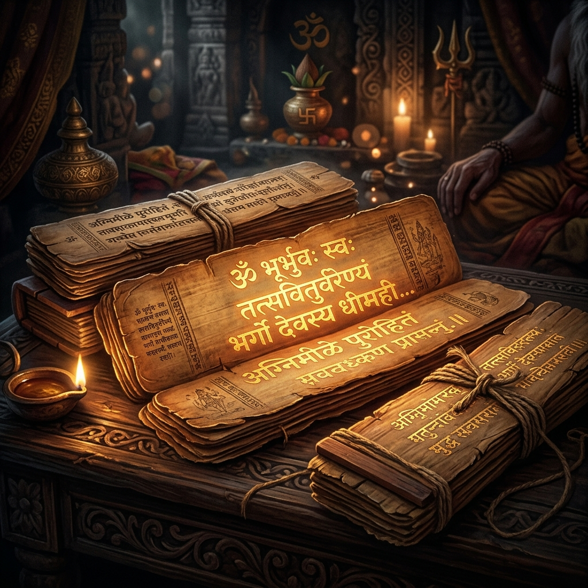
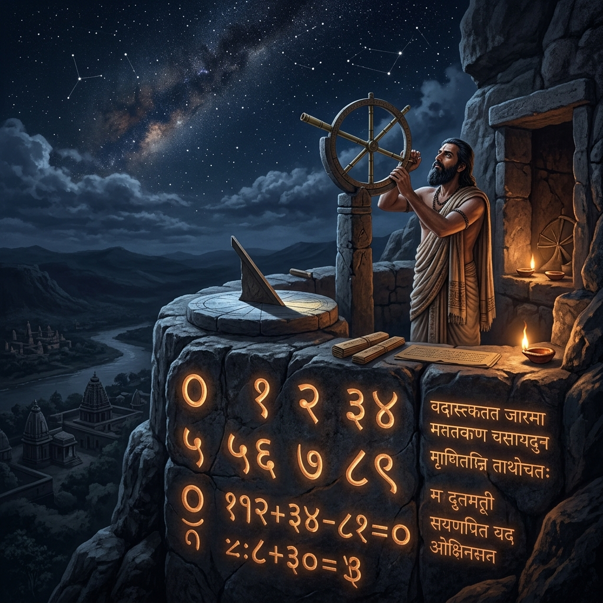
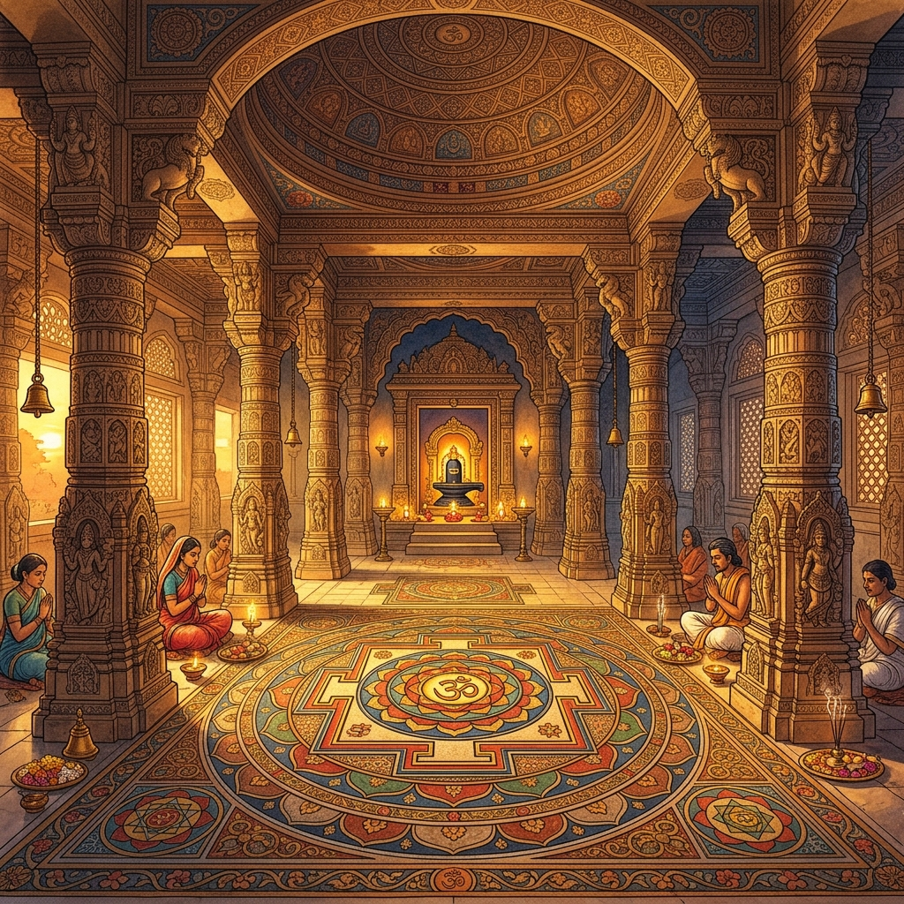
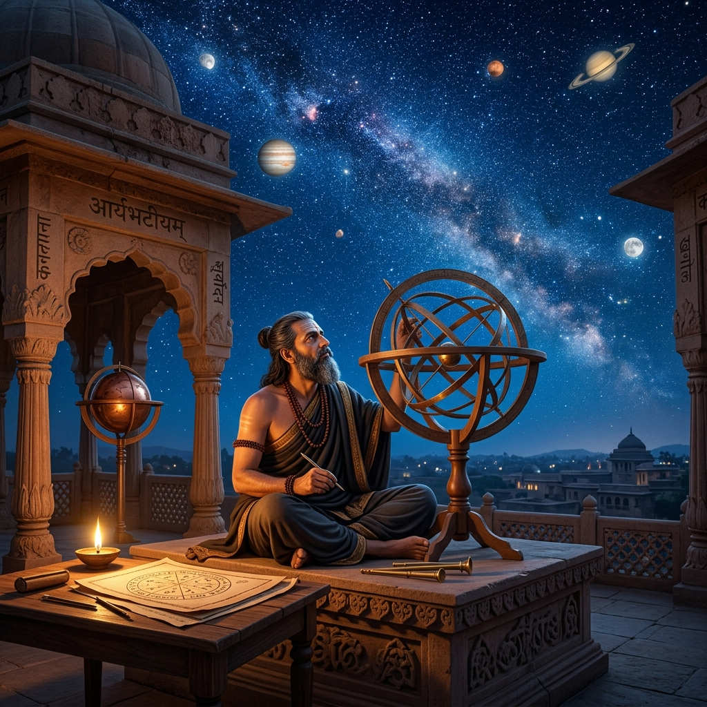
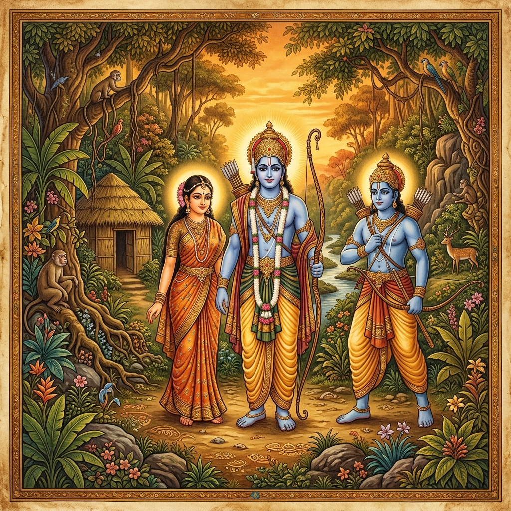
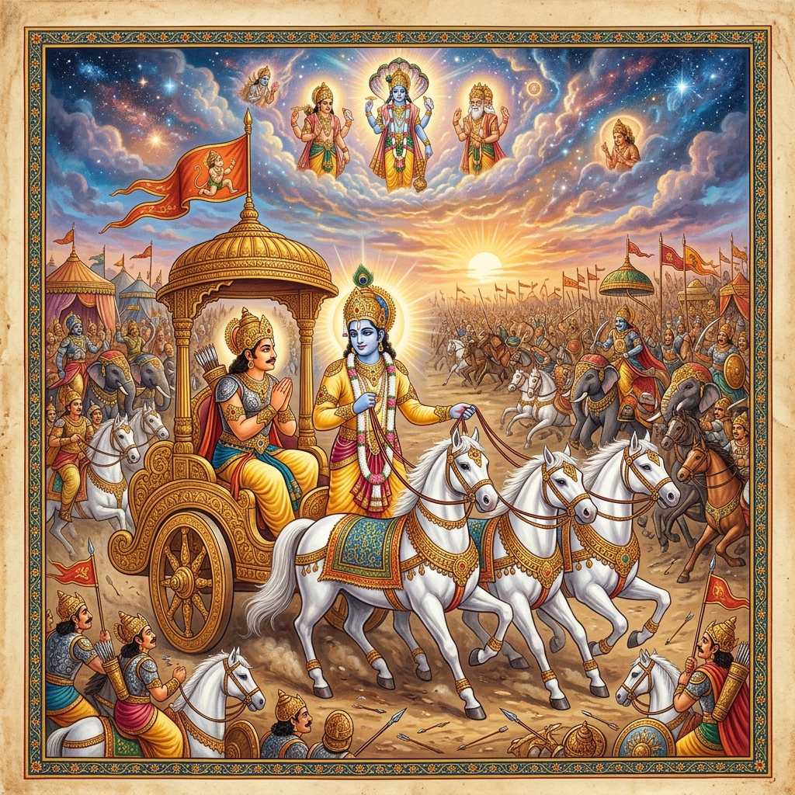

Explore an ancient framework of profound wisdom that integrates science, philosophy, and spirituality to address modern global challenges.एक प्राचीन ज्ञान प्रणाली का अन्वेषण करें जो आधुनिक वैश्विक चुनौतियों का समाधान करने के लिए विज्ञान, दर्शन और आध्यात्मिकता को एकीकृत करती है।
Explore Nowअभी खोजें
The Indian Knowledge System emphasizes a comprehensive approach to health, integrating the mind, body, and spirit. Through practices like Yoga and Ayurveda, IKS provides time-tested methodologies for preventive healthcare, mental resilience, and physical vitality, making it highly relevant in today's fast-paced, stressful world.भारतीय ज्ञान परंपरा स्वास्थ्य के प्रति एक व्यापक दृष्टिकोण पर जोर देती है, जो मन, शरीर और आत्मा को एकीकृत करती है। योग और आयुर्वेद के माध्यम से, आईकेएस निवारक स्वास्थ्य देखभाल और मानसिक लचीलेपन के लिए समय-परीक्षणित पद्धतियां प्रदान करता है।
Long before modern ecological movements, ancient Indian agricultural practices focused on sustainability. Concepts like crop rotation, organic farming, and harmony with natural cycles were foundational. These principles offer vital solutions to modern environmental challenges, promoting ecological balance and food security without depleting natural resources.आधुनिक पारिस्थितिक आंदोलनों से बहुत पहले, प्राचीन भारतीय कृषि प्रथाओं ने स्थिरता पर ध्यान केंद्रित किया। फसल चक्रण, जैविक खेती और प्राकृतिक चक्रों के साथ सद्भाव जैसी अवधारणाएं मूलभूत थीं।

The roots of modern computing, astronomy, and advanced mathematics trace back to Indian scholars. From the invention of zero (Shunya) to the decimal system and complex trigonometry developed by mathematicians like Aryabhata and Brahmagupta, IKS forms the bedrock of the technological advancements we rely on today.आधुनिक कंप्यूटिंग, खगोल विज्ञान और उन्नत गणित की जड़ें भारतीय विद्वानों से जुड़ी हैं। शून्य के आविष्कार से लेकर दशमलव प्रणाली तक, आईकेएस उन तकनीकी प्रगति का आधार बनता है जिन पर हम आज भरोसा करते हैं।
The Indian Knowledge System encompasses a vast array of scientific and artistic disciplines.भारतीय ज्ञान परंपरा में वैज्ञानिक और कलात्मक विषयों की एक विशाल श्रृंखला शामिल है।

The ancient science of architecture and town planning, harmonizing human dwellings with nature and cosmic energies.वास्तुकला और नगर नियोजन का प्राचीन विज्ञान, जो मानव आवासों को प्रकृति और ब्रह्मांडीय ऊर्जा के साथ जोड़ता है।
Advanced metallurgy, chemistry, and alchemy. Ancient Indians mastered zinc smelting, rust-resistant iron, and natural dyes.उन्नत धातु विज्ञान, रसायन विज्ञान और कीमिया। प्राचीन भारतीयों ने जिंक प्रगलन और जंग प्रतिरोधी लोहे में महारत हासिल की थी।

Precise astronomical observations, prediction of eclipses, and understanding the heliocentric nature of the solar system long before modern science.सटीक खगोलीय अवलोकन, ग्रहणों की भविष्यवाणी और आधुनिक विज्ञान से बहुत पहले सौर मंडल की प्रकृति को समझना।
A comprehensive treatise on dramaturgy, classical dance, music, and aesthetics, outlining the 'Rasa' theory of emotional experience.नाट्यशास्त्र, शास्त्रीय नृत्य, संगीत और सौंदर्यशास्त्र पर एक व्यापक ग्रंथ, जो भावनात्मक अनुभव के 'रस' सिद्धांत को रेखांकित करता है।
The foundational philosophical frameworks of the Indian Knowledge System that explore logic, reality, consciousness, and the cosmos.भारतीय ज्ञान परंपरा के मूलभूत दार्शनिक ढांचे जो तर्क, वास्तविकता, चेतना और ब्रह्मांड का पता लगाते हैं।
Logic and Epistemologyतर्क और ज्ञानमीमांसा
Atomic theory & Physicsपरमाणु सिद्धांत और भौतिकी
Dualism of Matter and Spiritपदार्थ और आत्मा का द्वैतवाद
Physical and Mental Disciplineशारीरिक और मानसिक अनुशासन
Hermeneutics and Ritualsहर्मेनेयुटिक्स और अनुष्ठान
Metaphysics and Non-dualismतत्वमीमांसा और अद्वैतवाद
Dive into the foundational narratives that have shaped the moral and philosophical landscape of India for millennia.उन मूलभूत कथाओं में गोता लगाएँ जिन्होंने सहस्राब्दियों से भारत के नैतिक और दार्शनिक परिदृश्य को आकार दिया है।

The journey of Prince Rama, a profound exploration of Dharma (duty), devotion, and the eternal struggle between light and darkness. Discover the ideals of ethical leadership and familial bonds.राजकुमार राम की यात्रा, धर्म, भक्ति और प्रकाश और अंधकार के बीच शाश्वत संघर्ष का एक गहन अन्वेषण।
Read Moreऔर पढ़ें
An epic of unprecedented scale dealing with complex human emotions, strategic warfare, and profound philosophical discourse, culminating in the timeless wisdom of the Bhagavad Gita.अभूतपूर्व पैमाने का एक महाकाव्य जो जटिल मानवीय भावनाओं और दार्शनिक विमर्श से संबंधित है, जिसका चरम भगवद गीता के ज्ञान में होता है।
Read Moreऔर पढ़ें